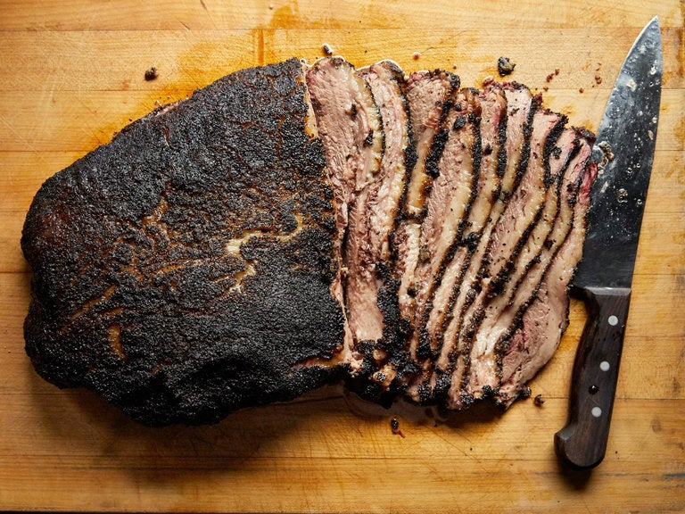

Texan Style Brisket Recipe

Ingredients
- One 10–12-pound whole beef brisket, fat trimmed to 1/4-inch thickness
- One 1/3 cup kosher salt
- One 1/3 cup freshly ground black pepper
Equipment
- A charcoal grill and a drip tray
- A chimney starter
- Two 20-pound bags hardwood charcoal (you may have some left)
- Eight-Twelve 2–3-inch untreated kiln-dried hardwood chunks, preferably hickory or oak
- A grill or analog thermometer (we recommend it even if your grill has one)
Preparation
- SEASON THE MEAT
An hour before preparing the grill, place brisket on a rimmed baking sheet. Mix salt and pepper in a small bowl and season the meat all over (it should look like sand stuck to wet skin but without being cakey). Let meat sit at room temperature for 1 hour.
- PREPARE YOUR GRILL
Fill chimney starter with charcoal; light and let burn until coals are covered with a thin layer of ash. Pour contents of chimney into one side of grill. Place 3 chunks of wood next to (not on top of) coals. (You want the wood to catch slowly and smolder. Placing them on top of the coals will cause them to burn too quickly.) Place grate on grill and cover grill, making sure to position vent on lid as far from heat source as possible. (This helps draw the smoke up and over the meat as it rises). Stick thermometer through top vent. Heat until thermometer registers 225–250°, adjusting vents on bottom and top of grill as needed to maintain temperature.
- MAINTAIN THE HEAT
Adjust vents as needed to control temperature. Check coals and hardwood about every 45 minutes. (Try to open lid as little as possible; check and replenish coals and hardwood at the same time.) For the coals, once you have checked them and decided to add more (they've burned down enough that you'll need more to keep your fire going and maintain your grill temperature), fill a chimney halfway with coals, then add coals to grill once they're covered with a thin layer of ash. (If you have a hinged grill grate, you can remove 1 lit coal from the grill with a pair of long tongs and place at the bottom of chimney to quickly light more coals.) If you control the heat well, you shouldn't need more than 4–6 chimneyfuls of coals to cook the brisket (2–4 chimneyfuls if finishing brisket in the oven). When checking hardwood, move it around to a hotter spot if needed, or replenish extinguished chunks to keep level of smoking constant. Make sure to reposition top vent on lid over meat and away from heat source when replacing.
- KNOW WHEN IT'S DONE
Keep smoking the brisket, rotating every 3 hours and flipping as needed if top or bottom is coloring faster than the other side, until meat is very tender but not falling apart and an instant-read thermometer inserted into the thickest part of meat registers 195°–205°, 10–12 hours total.*
- *NEED A CHEAT?
If you just don't want to spend your whole day at the grill, here's a fail-safe Aaron Franklin–endorsed alternate method that will deliver similarly glorious results: Smoke brisket on grill until an instant-read thermometer inserted into the thickest part of meat registers 150–170°, 5–6 hours. Wrap brisket in foil, place on a baking sheet, and cook in a 250° oven until meat reaches the same 195–205° internal temperature, 4–6 hours longer. What's important is getting that smoky flavor into the meat, and 5–6 hours on the grill should do it. After that point, you're simply getting the meat cooked through.
-
DO AHEAD
Brisket is best shortly off the grill, but you can still get good results smoking it up to 3 days ahead. Let cool for an hour before wrapping in foil and chilling. To serve, reheat meat, still wrapped, in a 325° oven until warmed through.
- DIG IN
Transfer brisket to a carving board and let rest at least 30 minutes. Slice brisket against the grain 1/4-inch thick.
- SERVE IT WITH:
Coleslaw, potato salad, and pinto beans.